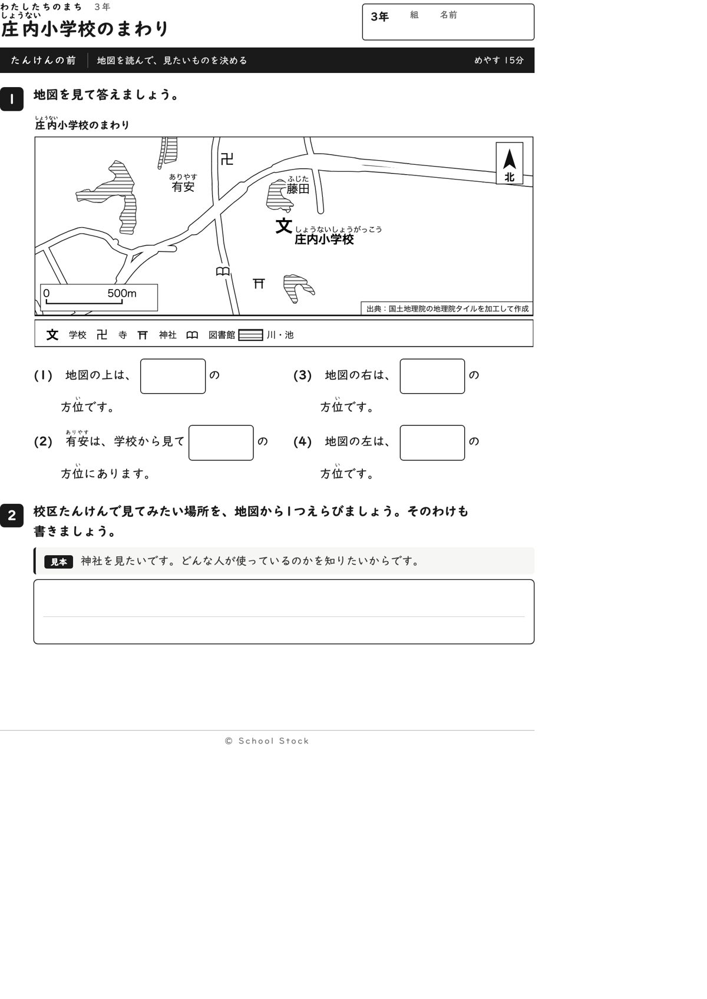
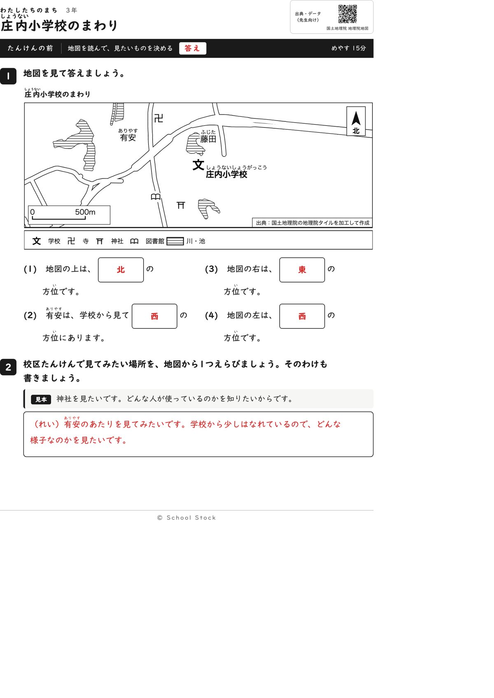
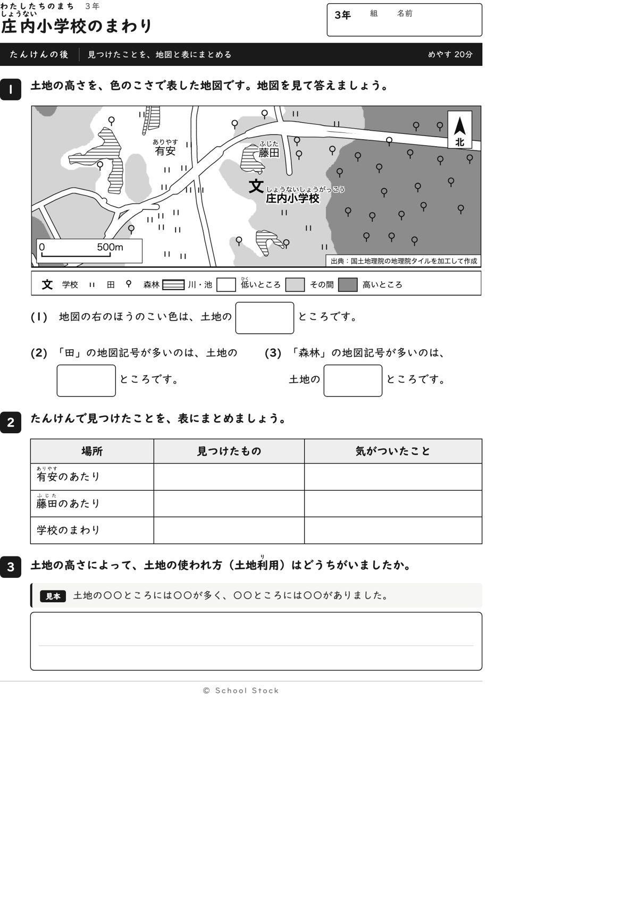
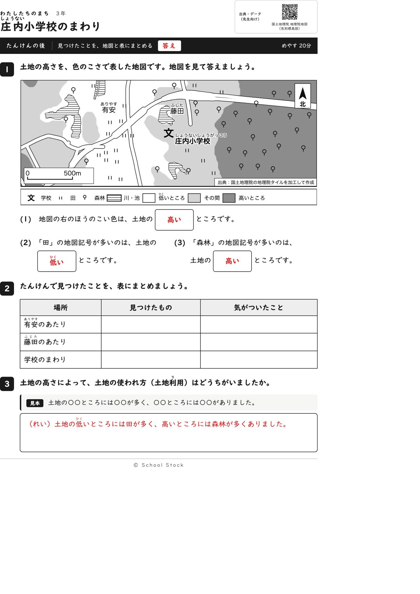
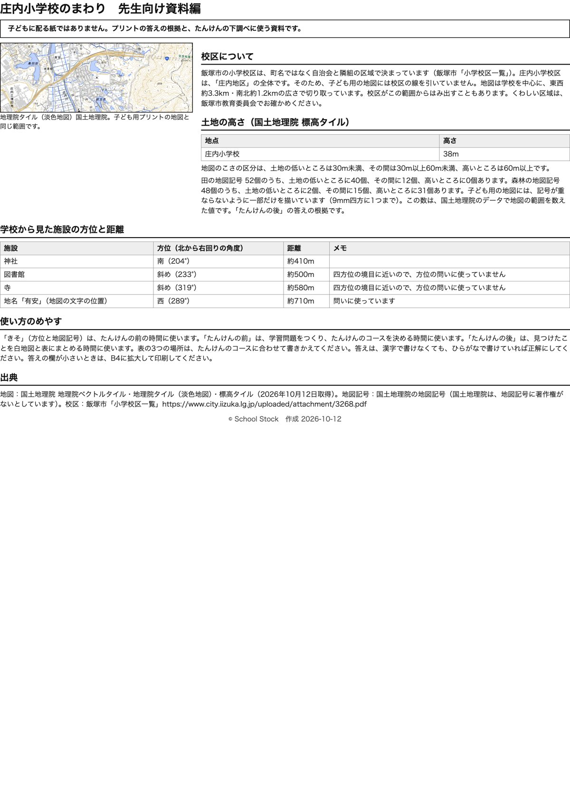

紙





直すところ
直すところはありません。
1回目のレビューで出た直し（1件・道具を直して作り直しました）
| 紙 | どこ | 何が困るか |
|---|---|---|
| たんけんの前、たんけんの後 | 地図の下の凡例の「川」と、地図の中の縞の4つの形 | 縞の形はどれも池です。淡色地図に池の名前が書かれているのに、子どもの地図では川と書かれていて、池を川と覚えます。 |
2回目のレビューで出た直し（1件・道具を直して作り直しました）
| 紙 | どこ | 何が困るか |
|---|---|---|
| たんけんの後 | 地図の左下の縮尺の「500m」 | 森林の記号が「500m」の文字の上に乗り、道の線も「5」にかかっています。縮尺の数字が読みにくくなります。 |
専門家団の声（いまの紙を見て）
香月八重筆頭・全学年
学年は合っています。前は上下左右と東西南北を結ぶ問いから入り、右と左で方位を言わせるので、四方位の最初の一歩にちょうどよいです。後は田、森林、有安のあたりの順で、凡例の言葉から選べます。つかむことは、低い所に田、高い所に森林という違いです。
日隈耕平社会
縮尺の「500m」は白い地の上に載り、森林の記号も道の線もかからなくなりました。藤田の文字は池の絵のすぐ右に並びますが、触れていません。有安289度は西、神社204度は南で、斜めの図書館と寺は問いに使っていません。田52個のうち40個が低いところ、森林48個のうち31個が高いところで、資料編と合っています。後の地図の下の池の端に森林の記号が1つ触れていますが、文字ではなく、答えにも響かないので直しには入れません。
藤川湊すぐ終わる子
前は方位が4問ですぐ終わります。見本は神社ですが、地図に神社があるので2番も速く書けます。後は(3)の有安のあたりが低いところと読めて、読む手ごたえがあります。
田淵さくら例がないと止まる子
前は上は北と書けるので1問目からできます。見本があるので2番も書き出せます。後は凡例の3つの色を見比べれば答えが出ます。
轟大和読む前に諦める子
前の(1)(3)(4)は地図の上と右と左を見れば書けて、読む前に諦める子でも入れます。後の(3)は有安の字を探すだけで動けます。縮尺の数字も白地で読めます。